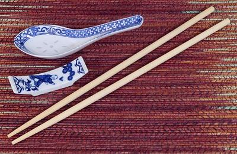

Chinese Table Place Utensils

These pictured are the traditional Chinese table place utensils. As you
can see, Chinese chopsticks are much thicker and longer than Japanese
examples. This gives the Chinese more flexibility with rice, but it still
needs to be a little sticky. There should also be a Chopstick Rest at each
table place. The spoon normally used is of the Chinese ceramic pattern, and
the one shown was made in China.
All foods are cut to bite size in the kitchen, and knives are never found
at the table. That would make assassination far too easy and less entertaining.
More on Chinese Serving Pieces
sv_tujchn1 220210 ©Andrew Grygus - ajg@aaxnet.com
- Linking to and non-commercial use permitted
All images not otherwise attributed are ©
cg1.